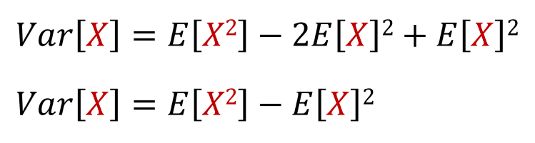

Lets say n dice were rolled, and the let the random variables {X1, X2, ..., Xn} represent the dice number, so X1 is the number of the first die, X2 is the number on the second die, and so on.

If we expand this, we get:

Using the linearity of expectation, we get:

Since E[cX] = c*E[X], then we get:

We can simplify this equation:
